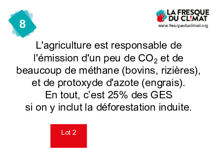

Cette carte peut être considérée comme la cause des secteurs économiques (industrie, bâtiment, transport, agriculture), ou comme un titre d'un ensemble de cartes qui sont alors regroupées dans une grosse "patate".
8 - Agriculture
1

25
32

L'agriculture utilise très peu d'énergie fossile, au regard des émissions d'autres G.E.S. dont elle est responsable. Elle est responsable de 80% de la déforestation. En effet, il faut des grandes surfaces pour cultiver, surtout pour nourrir les animaux d'élevage.
L'agriculture est une activité humaine qui a commencé dès que le climat s'est stabilisé, au début du Néolithique il y a 10000 ans, après la dernière déglaciation qui elle-même a duré 10000 ans. Dès lors, l'impact de l'Homme sur son environnement n'a cessé de s'accroître : il a domestiqué des espèces végétales (aujourd'hui, le riz domestiqué n'est plus capable de se reproduire sans l'intervention de l'homme), il a déforesté pour étendre les surfaces cultivées, privant les espèces animales de leur habitat naturel, et depuis la révolution verte (verte pour agricole, pas pour écologique !), il a commencé à utiliser des pesticides et des intrants nocifs pour l'environnement et pour lui-même.
6
9
5
7
10
12
25